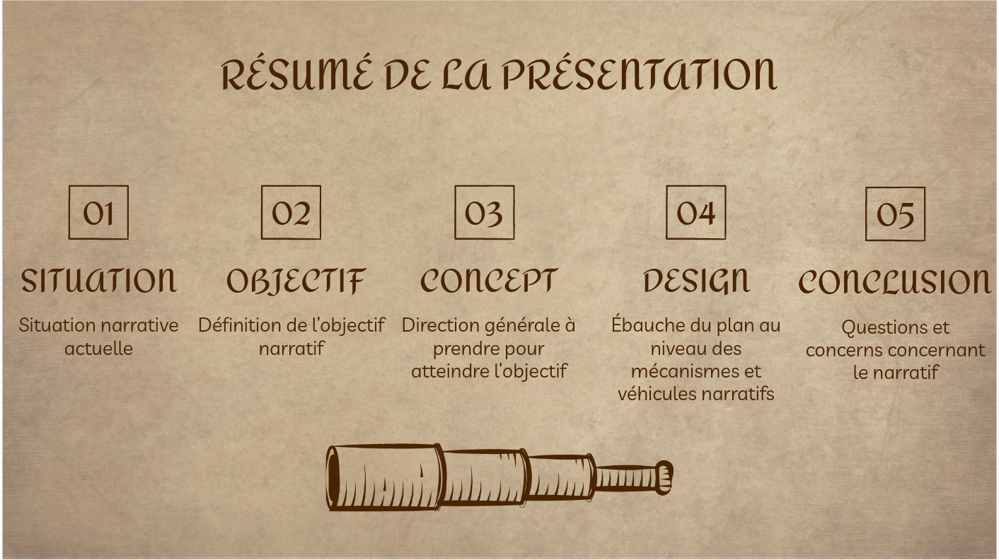
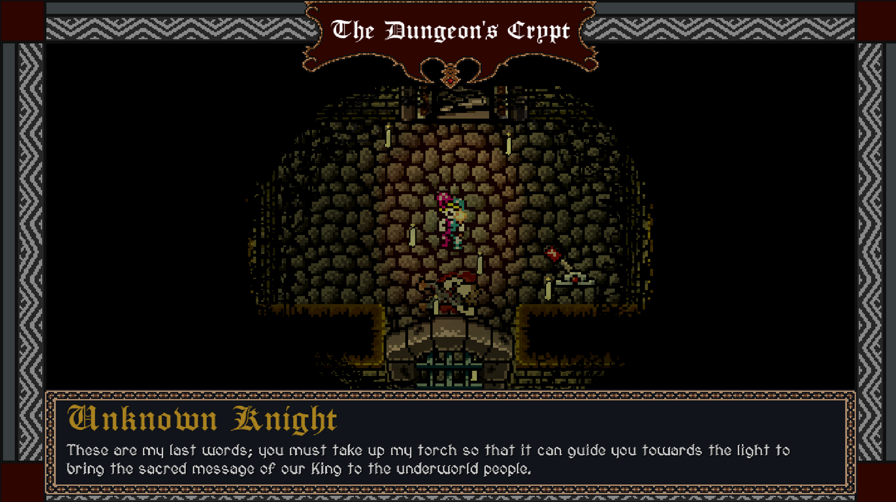
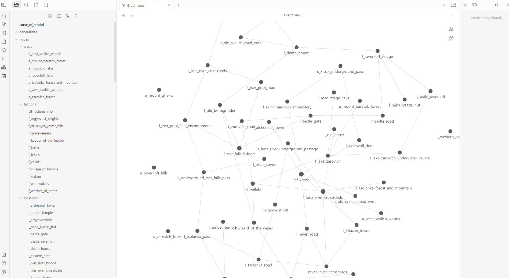

Worldbuilder & Storyteller
Who am I?
Immersive storyteller with many years in creative writing through various avenues. I made a seamless transition to video games some years ago in order to focus on designing and crafting worlds that strike the imagination. My main goal and focus is to create situations in which the player's actions creates the story in a deep and visceral way.
Narrative Design & Writing Experience
Academics: 10 years in the academic world studying mythmaking (history of religions). I participated as the lead of various projects, including conferences, journals, etc. and wrote papers and dissertations on various subjects. I also participated on various podcasts related to storytelling, myth and symbolism (notably The Symbolic World).
Video games: 4 years in video games doing narrative design and/or creative lead on various projects. I worked on various games, most notably on two as the narrative designer.
Tabletop design: 20 years as a game master (including both paid and in conventions), blogger and writer.
Projects
Projects

Please note the game is still under NDA, this is a non-descriptive screenshot of a presentation
Unannounced Game - Paper Cult Games
Worldbuilding, Narrative Pillar Design and Location Design
For this announced medieval fantasy game, I took the basic game idea from the creative lead and created the various narrative anchors, including the main themes, the identity of the antagonist and various characters, the mood and setting for some locations, and so on.

A shot of a dialogue with an NPC from the game
A Jesting Descent - Aeon & Star Interactive
Creative Lead, Story & World Design, Dialogues
A Jesting Descent is a free horror-adventure retro game set in a legendary medieval world.
For this game, I developped the narrative pillars, the points of interest in the dungeon, the characters, some of the dialogues, the themes, the quests and objectives, and much more.

A picture of an Obsidian graph of my re-imagined Curse of Strahd campaign
Tabletop Roleplaying Campaigns
Worldbuilding, Adventure Design
I have been a game master in various TTRPGs systems desining worlds for many years. I was also paid as a game master profesionnally for Dungeons & Dragons 5th edition and participated in conventions as a game master. During that time, I designed most of my adventures, worlds and stories; those that I did not design were greatly expanded, such as a soon-to-be-published expansion and recreation of Curse of Strahd from Wizard of the Coast. I also maintained a blog where I posted dungeon mastering tips and adventures weekly, where some hit thousands of views. One of my long-standing campaign was a 15+ players West Marches style campaign with an open world.
Narrative Design Specialties
-
Worldbuilding: Crafting living realms with breathing lore
Creating worlds that are richly detailed with layers of history that hook the reader on its mystery and depth
-
Themes & Symbolism Crafting: Breathing life into archetypical tales
Creating locations, characters and journeys that are vested with symbolism and archetypical thinking in order to tap into recognizable yet unique patterns
-
Ludo-Narrative Harmony & Narrative Pillars: Seamlessly fusing story and gameplay foundations
Working on developing narrative pillars from game design pillars in order to harmonize gameplay and story
-
Extensive Documentation: Transforming ideas into meticulously structured narratives
Producing well made multi-format documents (Google slide, Notion, Obsidian) for use
Contact